Trainees Edition
Trainers Edition
Trainees Edition
Trainers Edition
16. nodarbība: patiesuma pārbaudes rīki un metodes *
Nodarbības apraksts
Šīs nodarbības primārais mērķis iepazīstināt ar rīkiem un metodēm informācijas patiesuma pārbaudīšanā.
Nodarbības sekundārais mērķis sniegt vadlīnijas pasniedzējiem, kuri vēlas izmantot nodarbības saturu, lai apmācītu savus studentus.
Nodarbības laikā tiks sniegts priekšstats par rīkiem un metodēm, kas palīdz pārbaudīt informācīju, kā arī tiks piedāvātas vadlīnijas, kā pasniegt nodarbību.
Studenti, kuri veiksmīgi apgūs šīs nodarbības saturu, spēs:
- atšķirt faktu pārbaudes (fact-checking) un patiesuma pārbaudes (verification) jēdzienus;
- izprast patiesuma pārbaudes nozīmību;
- izprast četrus galvenos elementus, kas jaņem verā, veicot patiesuma pārbaudi;
- izmantot attēlu un video pārbaudes metodes un izmantot to rīkus;
- izmantot atrašanās vietas pārbaudes metodes un izmantot rīkus;
- izmantot nepieciešamās metodes un rīkus, lai pārbaudītu jebkuru sociālo mediju kontu;
- izmantot nepieciešamās metodes un rīkus, lai pārbaudītu jebkuru interneta vietni;
- pielietot robotprogrammatūras un troļļu noteikšanas metodes un izmantot nepieciešamos rīkus.
Pasniedzēji, kuri veiksmīgi apgūs šīs nodarbības saturu, spēs dalīties zināšanās un prasmēs dažādu patiesuma pārbaudes rīku un metožu izmantošanā (piemēram, attēlu, video, atrašanās vietu, sociālo mediju kontu, tīmekļa vietni).
(*) Case studies in Module 16 were prepared by Esra Özgür from Teyit.org. Teyit.org is the associate partner of Hacettepe University in this project.
Nodarbības struktūra
Šīs nodarbības izklāsts sastāv no sekojošām apakšnodaļām:
- Mērķis, satura izklāsts un mācību rezultāti;
- Nodarbības struktūra;
- Vadlīnijas studentiem;
- Vadlīnijas pasniedzējiem; (kā sagatavoties; mācību metodes un padomi);
- Saturs (mācību materiāli un vingrinājumi);
- Tests;
- Informācijas avoti (izmantotie un ieteicamie informācijas avoti, un video).
Galvenie nodarbības mērķi, satura apraksts un studiju rezultāti izklāstīti nodarbības apraksta daļā. Vadlīnijas studentiem ietver norādījumus un ieteikumus mācību vielas apguvē. Vadlīnijas pasniedzējiem sniedz padomus dažādos apmācības posmos, kas būtu noderīgi mācību priekšmeta mācīšanai. Saturs ietver visus mācību materiālus un ar to saistītos vingrinājumus. Tests sastāv no jautājumiem ar vairākiem atbilžu variantiem, kas palīdzēs studentiem novērtēt savu progresu. Informācijas avoti iedalās: izmantotie informācijas avoti un ieteicamie informācijas avoti, kas paredzēti individuālai apguvei un turpmākai izpētei. Izmantotie informacijas avoti ir saraksts, kurā uzskaitīti materiāli nodarbības sagatavošanai. Ieteicamie informācijas avoti sastāv no papildu avotu un videoklipu saraksta, kurus ieteicams lasīt un skatīties, lai uzzinātu vairāk par konkrēto nodarbības tēmu.
Vadlīnijas studentiem
Studentiem jāizlasa teksts, jānoskatās ieteicamie video un jāizpilda vingrinājumi. Papildinformāciju studenti var meklēt ieteiktajos resursos. Pēc iepazīšanās ar nodarbības saturu studentiem ieteicams aizpildīt testu, lai novērtētu savu progresu. Ja nepieciešams, studenti vēlreiz var pārskatīt mācību materiālu.
Vadlīnijas pasniedzējiem
Ietver ieteikumus un padomus pasniedzējiem, kā izmantot šīs nodarbības saturu mācību procesā.
Sagatavošanās
Sagatavot prezentāciju (PowerPoint/Prezi/Canva) par nodarbības tematu, kas bagātināta ar vizuāliem uzskatāmiem piemēriem (atteli un video). Ieteicams katrai nodarbības mērķauditorijai pielāgot individualus piemērus un vingrinājumus. Vietējo piemēru izvēle (konkrētā valstī) saistībā ar pašreizējām vai labi zināmām problēmām palīdzēs skaidrāk ilustrēt jautājumu, kā arī pievērst studentu uzmanību. Jo pazīstamāki un populārāki būs piemēri, jo labāk tiks nodots vēstījums.
Nodarbības uzsākšana
Īss tests (3-5 jautajumi), vēlams izmanto Kahoot vai Mentimeter rīkus, lai panāktu lielāku studentu iesaisti. To var izmantot kā motivācijas rīku, kā arī, lai pārbaudītu apmācāmo esošās zināšanas par nodarbības tematu. Daži jautājumu piemēri varētu būt šādi: Kas ir patiesuma pārbaude? Vai izmantojat kādus patiesuma pārbaudes rīkus?
Nodarbības vadīšanas metodes
Mācību procesā var tikt izmantotas dažādas metodes. Piemēram:
- Lekcija
- Diskusija
- Darbs grupās
- Pašrefleksija
Padomi pasniedzējiem
Iesildīšanās
Lai efektīvi iesaistītu studentus nodarbības procesā un vienotos, kas tiks apgūts tās laikā, nepieciešams uzdot dažus jautājumus par nodarbības tēmu. Ieteicams grupu darbs, aicinot studentus apspriest un apkopot idejas. Tāpat arī individuāls darbs, lūdzot katram dalībniekam uzrakstīt savas idejas uz līmlapiņām.
Idejas aktivitātes realizēšanai:
- Noskaidrojiet, vai studenti sociālajos medijos novērojuši saturu (attēlu, tekstu, video utt.), kas radījis šaubās par tā patiesumu.
- Ja viņu atbilde ir apstiprinoša, viņiem var jautāt papildjautājumus. Piemēram, vai viņi mēģinājuši pārbaudīt šo saturu? Kādas darbības viņi veikuši, mēģinot pārbaudīt aizdomīgu saturu?
Nodarbības mērķa izskaidrošana
Skaidri jānorāda nodarbības mērķis (tie ir rīki un metodes, ko var izmantot informācijas pārbaudei). Pēc iesildīšanās jautājumiem būs vieglāk izskaidrot nodarbības mērķus.
Nodarbības satura izklāsts
Iepazīstinot ar nodarbības saturu, pārliecinieties par mijiedarbību ar studentiem un mudiniet viņus aktīvi iesaistīties:
- Ņemot vērā, ka verifikācijas prasmju aogūšanai nepieciešama datora vai mobilo ierīču izmantošana, uzsākot nodarbību, svarīgi iepriekš zināt tās mērķauditoriju. Tehniskās prasmes var atšķirties atkarībā no dažādiem faktoriem (piemēram, vecuma, izglītības līmeņa). Piemēram, cilvēkiem gados, iespējams, sarežģīti izmantot verifikācijas metodes un rīkus, ja viņi ikdienā nezimanto datoru vai mobilās ierīces. Tāpēc šādus studentus var apmācīt lietot vienkāršākus rīkus (piemēram, Google un tā apakšrīkus). Turpretim studentiem (piemēram, augstskolu studentiem), kuriem ir attīstītākas prasmes, izmantot attiecīgos rīkus, var būt vajadzīgas padziļinātas zināšanas par pārbaudes metodēm un rīkiem, nekā sākotnēji paredzēts piedāvāt. Šajā gadījumā var izmantot resursus, kas atrodas sadaļā “Ieteicamie avoti”.
- Lai studentus efektīvi apmācītu, kā izmantot pārbaudes rīkus un metodes, priekšroka praktiskiem vingrinājumiem. Ja iespējams, jautājumi un/vai gadījuma izpēte jāsagatavo iepriekš, un apmācāmajiem jāspēj atbildēt uz šiem jautājumiem, izmantojot stundā apguvei piedāvātos rīkus un metodes.
- Nodarbības laikā jānoskaidro, kas studentam sagādā grūītības. Tādējādi tiks skaidrāk saprasts, kuras nodarbības daļas nav pilnībā izprastas. Šīs tēmas var atkārtot un papildināt ar tēmu saistītiem piemēriem.
- Skaidrojot nodarbības tēmu, jāiekļauj piemēri no ikdienas dzīves.
- Ieteicams izmantot gan vietējos, gan starptautiskos piemērus. Tas palīdzēs praktikantiem asimilēt priekšmetu.
Noslēgums
Izveidojiet īsu nodarbības kopsavilkumu un uzdodiet dažus jautājumus, kas palīdzēs saprast svarīgāko, ko vēlējāties studentiem iemācīt.
Sekojošs jautājums var palīdzēt:
- Pajautājiet studentiem, kas jāņem vērā informācijas pārbaudes laikā.
Noslēdzot nodarbību, pārliecinieties, vai studenti sapratuši, ka pieejamas vairākas metodes un rīki, ko var izmantot, lai pārbaudītu dažāda veida saturu.
Saturs: patiesuma pārbaudes rīki un metodes
Ievads
Pirms sniegt izklāstu par patiesuma pārbaudes rīkiem un metodēm, nepieciešams sniegt tās definīciju.
Kas ir patiesuma un faktu pārbaude
Patiesuma pārbaude un faktu pārbaude ir divas atsevišķas žurnālistikas prakses, kuras bieži tiek lietotas savstarpēji vienai otru aizstājot.
Lai gan šie divi jēdzieni šķiet cieši saistīti, starp tiem pastāv dažas atšķirības, kas dažkārt var radīt apjukumu (Mantzarlis, 2015; Silverman, 2020b). Mūsdienās, dezinformācijas izplatības ietekmē, šie termini vair nav saistāms tikai ar žurnālistikas praksi, bet kļuvuši par prasmēm, kuras pamatlīmenī katram vajadzētu apgūt.
Patiesuma pārbaude ir process, kas novērtē ziņas precizitāti, pirms tā tiek pārraidīta kā ziņa medijos. Tā koncentrējas uz lietotāju radītu saturu, pievēršot uzmanību avota ticamībai (Mantzarlis, 2015, 2018). Savukārt faktu pārbaude ir process, kas tiek veikts pēc ziņas publicēšanas, salīdzinot atklātu apgalvojumu, kas izteikts publiski, ar uzticamiem un autentiskiem avotiem. Tas arī koncentrējas uz apgalvojuma loģiku, saskaņotību un kontekstu (Mantzarlis, 2015). Faktu pārbaude no tradicionālās ziņu žurnālistikas ievērojami novirzījusies uz politisko žurnālistiku. Tā arvien vairāk koncentrējas uz politiķu un citu publisku personu izteikumu kontroli (Silverman, 2020b).
Atmaskošana ir patiesuma pārbaudes papilddarbība, un tās pielietošanā nepieciešamas noteiktas prasmes, kas līdzīgas patiesuma pārbaudē (Mantzarlis, 2018). Gadījumos, kad nepatiesu informāciju nav iespējams novērst, svarīgi to atmaskot. Nepieciešams izskaidrot, kādēļ tā ir nepatiesa, atklājot patiesību. Ja atmaskošana netiek sniegta detalizēti, iespājama dezinformācija turpināšanās (Lewandowsky et al, 2020, p. 4).
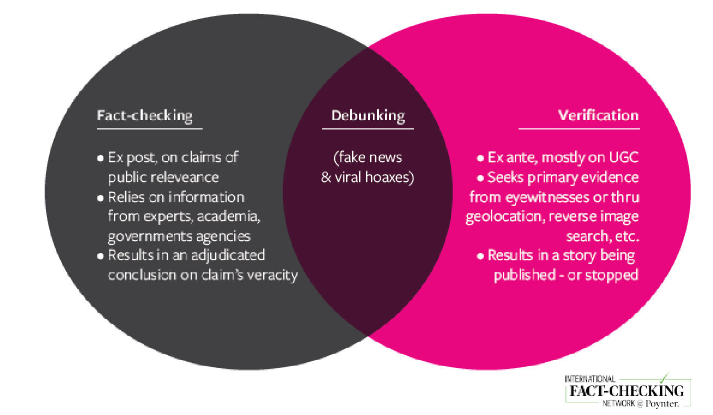
Avots: Mantzarlis, 2018, p. 83
Informācijas pārbaudāmība
Pirms satura patiesuma parbaudes, svarīgi pārliecināties, vai tas saistīts ar notikumu, kas patiešām norisinājies (Urbani, 2019, p. 10). Ja notikums nav noticis, nebūs nozīmes pārbaudīt šādu saturu. Tāpēc, lai pārbaudītu izvirzītā apgalvojumā patiesumu, jāatrod ar šo apgalvojumu saistīti pierādījumi. Kopš personīgie viedokļi balstīti uz cilvēku sajūtām, domas un priekšstati ir subjektīvi, tos nevar pārbaudīt.
Patiesuma pārbaudes nepieciešamība
Līdz ar tehnoloģiju attīstību viedtālruņi kļuvuši par mūsu dzīves sastāvdaļu, sniedzot iesēju ikvienam ērti veidot saturu (ierakstus, video, attēlus u.c.), to kopīgot un izplatīt citiem. Īpaši sociālo mediju platformu izmantošana nodrošinājusi šādu satura kopīgošanas vidi ikvienam, kas izmanto viedierīces. Arī ziņu organizācijas un to platformas var gūt labumu no šāda lietotāju veidota satura (Wardle, n.d., p. 25-26).
Tomēr tām jāņem vērā risks, ka saturs var tīši vai netīši saturēt nepatiesu informāciju. Piemēram, ir cilvēki, kuri veido viltotas interneta vietnes vai sociālo mediju kontus, manipulē ar attēliem vai videoklipiem, vai kopīgo saturu ar nepatiesu saturu no vecām ziņām, lai maldinātu ziņu organizācijas un sabiedrību (Wardle, n.d., p. 26). Īpaši krīzes un ārkārtas situācijās (piemēram, dabas katastrofas, teroristu uzbrukumi, negadījumi) cilvēku ieraksti sociālajos tīklos var tikt neprecīzi iegaumēti, kā arī gūtas maldīgas asociācijas (Buttry, n.d., p. 16).
Šāda satura izmantošana un dalīšanās ar citiem sociālo tīlku lietotājiem izraisa nepatiesas informācijas izplatīšanos. Tiešsaistes platformu vide izvirzās priekšgalā, kurā viltus ziņas un dezinformācija izplatās visplašāk un visātrāk (Vosoughi, Roy & Aral, 2018, p. 1146). Tāpēc informacijas patiesuma pārbaudei ir ļoti svarīga loma dezinformācijas problēmas risināšanā (Wardle, n.d., p. 26).
Patiesuma pārbaude ir svarīga prasme, ko var apgūt un paveikt, izmantojot bezmaksas tiešsaistes rīkus un tradicionālās žurnālistikas metodes. Taču neviena tehnoloģija nevar nodrošināt 100% automātisku patiesuma pārbaudi. No otras puses, ar tradicionālajām pētniecības metodēm un cilvēka aci vien nepietiek. Ideālā gadījumā abas metodes būtu jāizmanto kopā, lai atrastu pareizo atbildi (Wardle, n.d., p. 27).
Noteikti četri galvenie elementi, lai pārbaudītu lietotāja radītu saturu vai informāciju, kas iegūta, izmantojot sociālos medijus (Urbani, 2019, p. 11; Silverman & Tsubaki, n.d., p. 98-100; Wardle, n.d., p. 27):
- Satura izcelsme (provenance): satura autentiskuma pārbaude. (Vai tas ir oriģināls konts vai saturs?) Satura dažādu versiju meklēšana, mēģinot atrast tā pirmo versiju, kā arī cita saistītā satura pārbaude.
- Avots: Kurš izveidoja vai augšupielādēja saturu? Personas/organizācijas/konta izpēte, kas izveidoja, augšupielādēja vai kopīgoja saturu. Tāpat arī citu kontu izpēte, kas var būt saistīti ar šīm personām/kontiem.
- Datums: Notikuma datuma pārbaude. (Kad saturs tika izveidots?)
- Atrašanās vieta: notikuma vietas pārbaude. (Kur tika izveidots saturs/konts/vietne? Kur tika uzņemts/atrasts saturs?)
Papildus šiem četriem elementiem, nepieciešama izpratne par satura izveides un/vai koplietošanas motivāciju. Piemēram, kāpēc konts/vietne tika izveidots, vai kāpēc satura daļa tika konfiscēta, var veicināt citu elementu pārbaudes procesu (Urbani, 2019, p. 50). Pēc pirmavota un tā satura patiesuma pārbaudes pēc to izcelsmes, avota, datuma un vietas, ir jāsalīdzina informācija un to precizitāte, savstarpēji pārbaudot dažādus avotus (Silverman & Tsubaki, n.d., p. 98).
Ir daži avoti, kas var kalpot kā ceļvedis, kā noteikt, vai informācija, kas tiek nodota kā ziņas, ir vai nav viltota:
- Kā apturēt “viltus ziņas” (How to stop fake news) (Kiely & Robertson, 2016; IFLA, 2017).
- Septiņas vienkārši soļi, kā neļaut sevi apmānīt (Don’t get fooled: 7 simple steps) (News Literacy Project, 2021).

Avots: IFLA, 2017 (CC BY 4.0)

Avots: News Literacy Project, 2021
Ja personai nav laika informācijas patiesuma pārbaudei, kā arī, ja prasmes tās veikšanai nav pietiekamas, var konsultēties ar bibliotekāriem un patiesuma pārbaudes platformas pārstāvjiem (IFLA, 2017; Kiely & Robertson, 2016). Pirms aizdomīga satura patiesuma pārbaudes procesa uzsākšanas sākotnēji ieteicams noskaidrot, vai šis saturs jau iepriekš ir pārbaudīts. Šim nolūkam var izmantot Google Fact Check Explorer .
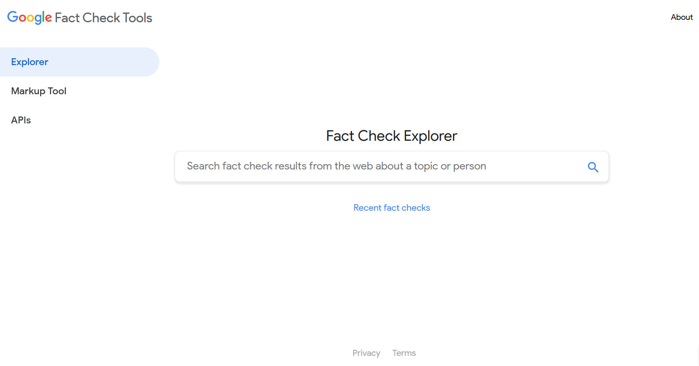
Avots: Google Fact Check Explorer
Informācijas patiesuma pārbaudes procesā nepieciešams izpētīt daudz un dažādus informācijas elementus. Piemēram, attēlu un video pārbaude, atrašanās vietas pārbaude, aizdomīga sociālo mediju konta pārbaude, vietnes pārbaude, robotu un troļļu noteikšana.
Attēlu un video patiesuma pārbaude
Attēli un video ieņem nozīmīgu vietu komunikācijā, īpaši sociālajos tīklos, jo tiem piemīt spēja pārliecināt un ieintriģēt. Tomēr jebkurš fotoattēls vai video ir viegli pārveidojams. Tādējādi fotoattēli un videoklipi kļuvuši par rīkiem, ko var izmantot dezinformācijas izplatīšanā. Šādā situācījā biežāk sastopami fotoattēli un video, kas uzskatāmi kā maldinoši un tiek izmantoti ārpus konteksta (skatīt 2. nodaļas 1. daļu) (Vis, Faulkner & Guy, 2020).
Attēlu patiesuma pārbaude
Attēlu patiesuma pārbaudes process koncentrējas uz fotoattēliem, fotoattēlu kolāžām, mēmiem, grafikām un ekrānuzņēmumiem (Vis, Faulkner & Guy, 2020). Attēla avota izsekošana parasti ietver tādas informācijas atrašanu kā, piemēram, kurš augšupielādējis vai uzņēmis attēlu utt. (Barot, n.d., p. 37). Lai atrastu šo informāciju, var izmantot “reverso attēlu meklēšanu”. Izmantojot šo metodi, tiek pārbaudīts, vai attēls kopīgots iepriekš, kurās platformās tas kopīgots, kādā kontekstā un kas to kopīgojis.
Fotoattēlu patiesuma pārbaudes laikā ieteicams koncentrēties uz šādiem jautājumiem (Urbani, 2019):
- Vai jums pieejama fotoattēla oriģinālā versija?
- Vai zināt, kurš uzņēmis fotoattēlu?
- Vai zināt, kur tika uzņemts fotoattēls?
- Vai zināt, kad fotoattēls tika uzņemts?
- Vai zināt, kāpēc fotoattēls tika uzņemts?
Šos jautājumus var noskaidrot sekojoši:

Avots: Urbani, 2019
Papildus augstāk minētajiem jautājumiem, tiek ieteikti vēl pieci jautājumi, kas palīdzēs veikt paplašinātāku fotoattēlu patiesuma pārbaudes procesu (Vis, Faulkner & Guy, 2020):
- Kas ir tas, ko redzu fotoattēlā?
- Ko tas atspoguļo?
- Kurš to uzņēma?
- Ko fotoattēls nozīmēja tā uzņemšanas brīdī?
- Ko tas tagad nozīmē?
Pirmie trīs no šiem jautājumiem, tāpat kā citi patiesuma pārbaudes jautājumi, vairāk attiecas uz attēla izcelsmi un avotu. Pēdējie divi jautājumi mudina domāt par attēla nozīmi un apšaubīt to dažādās nozīmes, kas radušās attēla izmantošanas laikā (Vis, Faulkner & Guy, 2020). Šie divi jautājumi var palīdzēt atpazīt un novērtēt maldinošu saturu, nepatiesu kontekstu, ar kuru sastopamies informācijas traucējumu laikā (Skatīt 2. nodaļas 1. daļu).
Pirmkārt, fotoattēlu izcelsmes un avota noteikšanai var tikt izmantota “reversā attēlu meklēšanas metode”. Otrkārt, salīdzināt līdzīgus fotoattēlus un pārbaudīt to EXIF datus. EXIF dati var būt ceļvedis, lai pārbaudītu, vai attēlam ir datuma informācija. Treškārt, par vēl vienu būtisku fotoattēla patiesuma pārbaudes elementu tiek izvirzīta atrašanās vieta.
Reversā fotoattēlu meklēšana
Reverso attēlu meklēšanu var veikt šajās platformās: Google Images, Yandex Image Search, Bing un TinEye. Lai to īstenotu, attēls vai attēla saite (URL) tiek meklēta attēlu meklēšanas platformās. Šīs meklēšanas laikā tiek pārbaudīts, vai internetā atrodama atbilstība šim attēlam. Ja atrasta sakritība, tas tiek parādīts rezultātu sarakstā. Ja tiek saņemtas vairākas viena attēla saites, tiek piedāvāts pārbaudīt dažādu izmēru attēlus, atverot šīs saites. Paredzēts, ka augstākās izšķirtspējas vai izmēra attēls sasniegs sākotnējo avotu. Lai noskaidrotu, vai avots ir oriģināls, to jāsalīdzina ar attēlu, kas personai pieejams (Barot, n.d., p. 37; Silverman & Tsubaki, n.d., p. 98-99).
Google reversās attēlu meklēšanas opciju nevar izmantot visās mobilajās ierīcēs. Šo meklēšanas opciju var izmantot, ja attiecīgā saite atvērta darbvirsmas versijā. Ja vēlaties mainīt attēlu meklēšanu ar savu mobilo ierīci, varat izvēlēties tādus rīkus kā Yandex Image Search, Bing and TinEye.
Piemērs: Sociālajos medijos teikts, ka ar bildi, kas redzama zemāk, dalījusies dziedātāja Britnija Spīrsa. Ar recerso fotoattēlu meklēšanu pārbaudīsim, vai tā ir patiesība. I

Avots: Google Images

Avots: Google Image Search
Meklēšanas lodziņā ielīmējām saiti uz attēlu, kuru vēlējāmies atrast. Rezultātos tika norādīts sociālo tīklu konts ar tādu pašu attēlu.
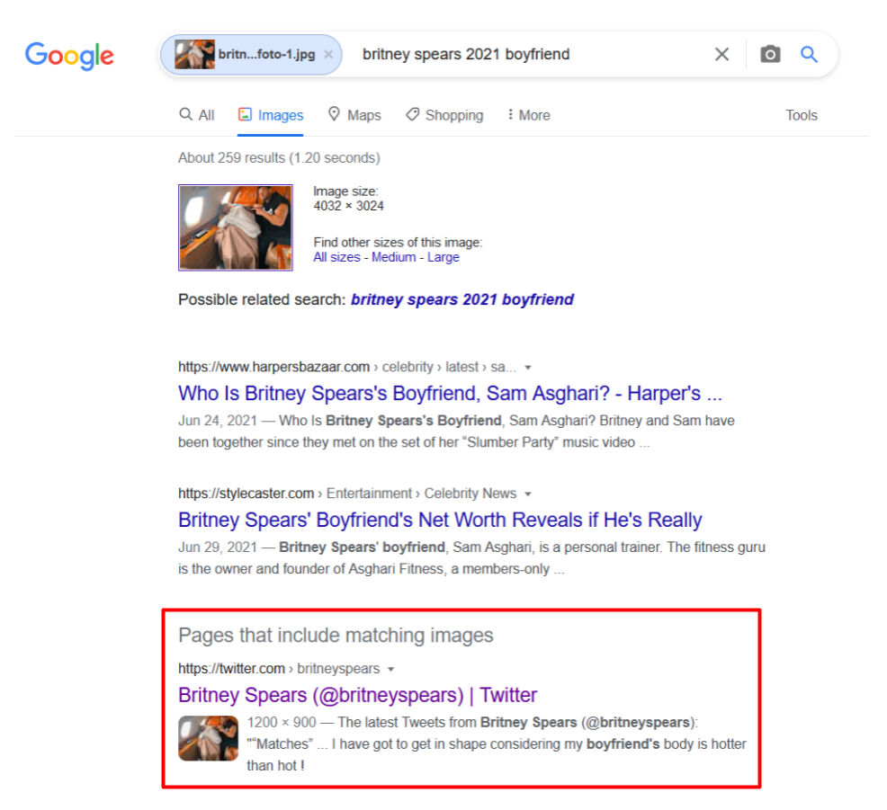
Avots: Google Image Search Results

Sociālā tīkla konts atzīmēts ar zilas krās ķeksīti, kas norāda, ka tas ir dziedātājas Britnijas Spīrsas ofociālais mikroblogošanas vietnes Twitter konts. Tāpat norādīta papildus informācija, kas saistīta ar konta īpašnieci, piemēram, tīmekļa saite, atrašanās vietas informācija, konta izveides datums.

Avots: Britney Spears’ Tweet
Pārbaudot kontā kopīgotos tvītus, redzams, ka attēls, kas ir mūsu pētījuma priekšmets, atrodams stap tiem.

Avots: Britney Spears’ Tweet
Dažkārt nepietiek vien ar Google reversās attēlu meklēšanas funkciju. Lai sasniegtu labāku un precīzāku fotoattēlu patiesuma pārbaudi, tiek ieteikts izmantot Yandex (Toler, 2019). Izmantojot RevEye Chrome extension, pārlūkprogrammā ar peles labo pogu noklikšķinot uz fotoattēla, līdzīgus attēlus varat meklēt vairākās platformās vienlaikus.

Avots: RevEye Reverse Image Search
Dažkārt meklētājprogrammas ir ierobežotas reversajā attēlu meklēšanā. Šie rīki ne vienmēr var veiksmīgi atrast attēlus, īpaši sociālajos tīklos, piemēram, Twitter, Instagram, Facebook (Zadrozny, 2020).
EXIF dati
Veicot attēla patiesuma pārbaudi, ieteicams pārbaudīt, vai izmantota montāža. Lai to uzzinātu, nepieciešams pārbaudīt attēla EXIF datus (Barot, n.d., p. 38; Silverman & Tsubaki, n.d., p. 99). Šo datu pārbaudei jāizmanto Foto Forensics, View and Remove EXIF Online, Jeffrey's Image Metadata Viewer rīku.
Foto Forensics: sniedz iespēju atrast attēla EXIF metadatus un redzēt attēla kļūdu līmeņa analīzi (ELA). Šī platforma var sniegt arī tādu informāciju kā kameras modelis, attēla uzņemšanas laiku un oriģinālā attēla izmēru (Silverman & Tsubaki, n.d., p. 99).
Piemērs: Apskatīsim apgalvojumu, ka fotoattēlā redzams Grieķijas karogs, kas izkārts pie Dimetokas (Dimetoka) mošejas.

Avots: The claim that the photo shows the Greek flag hanging on the mosque in Dimetoka
Saskaņā ar apgalvojumu, kas strauji izplatījās plašsaziņas līdzekļos Turcijā, Grieķijas karogs tika izkārts Osmaņu mošejas minaretā Dimetokā. Tomēr apgalvojums nav patiess. Sākotnējais attēls uzņemts 2015. gadā, un Grieķijas karogs fotoattēla oriģinālā tika pievienots vēlāk. Kad DHA piedāvātais fotoattēls tika meklēts, izmantojot reverso attēlu meklēšanu, tas tika atrasts vietnē e-evros.gr (2015. gads), kas tiek pārraidīta no Evros reģiona ar grieķu paplašinājumu.
Uzmanīgāk aplūkojot fotoattēlu, atklājas, ka vēlāk pievienotā gaisma un karoga novietojums nav savienojami ar pārējo fotoattēlu. Samontētajā fotogrāfijā karogs izskatās diezgan mākslīgs un ne tā ierastajā leņķī. Fotoforensics analīze arī apstiprina, ka ar attēlu tiek manipulēts (Teyit, 2020, June 1).
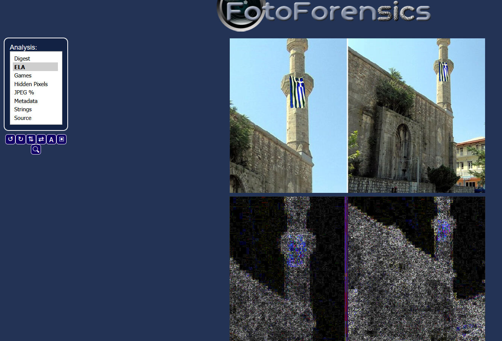
Lielākā daļa sociālo mediju platformu, piemēram, Twitter, Facebook, Instagram (izņemot Flickr), nodzēš gandrīz visus attēlos ietvertos metadatus, kad tie tiek augšupielādēti to platformā (Barot, n.d.). Tādējādi šādās platformās grūti piekļūt attēlu EXIF datiem.
Līdzība
Papildus reversajai attēlu meklēšanai un EXIF informācijas pārbaudei tiek piedāvāts arī rīks Face++ , kas norāda uz iespējamību, ka divi fotoattēli pieder vienai personai (Zadrozny, 2020). Šis rīks var būt īpaši noderīgs, pētot profila fotoattēlu sociālo mediju kontā.
Piemērs: Vai šī fotogrāfija ir uzņemta pēc ASV vēlēšanām Donalda Trampa atbalstīšanas mītiņā Vašingtonā?
Kad 2021. gada 6. janvārī tika apstiprināti ASV prezidenta vēlēšanu rezultāti, daži no Donalda Trampa atbalstītājiem, kuri protestēja Vašingtonā, izlauzās cauri apsardzei un iekļuva Kongresa ēkā. Galvaspilsētā tika izsludināta komandantstunda saistībā ar bruņotiem incidentiem gan ēkas priekšpusē, gan iekšpusē. Pēc tā sāka izplatīties fotogrāfija ar komentāru gan ķīniešu, gan angļu valodā, kurā bija redzams pūlis mītiņa laikā.
Google reversā attēlu meklēšana atklāja, ka fotoattēlā patiesībā redzams mītiņš, kurā protestēja pret vardarbību ar ieročiem. Tas notika Vašingtonā, 2018. gada martā, un tika publicēts izdevumā Washington Post. To apstiprināja arī fotožurnālists Salivans Džordžs (Salwan Georges). Tajā pašā dienā Džordžs savā Twitter kontā atspēkoja nepatieso apgalvojumu par savu fotogrāfiju (Teyit, 2021, January 7).
Atrašanās vietas informācija
Lai apstiprinātu fotogrāfijas uzņemšanas vietu un laiku, var meklēt tādus pavedienus kā transportlīdzekļu numurzīmes, konkrētās dienas laikapstākļus, dažādus pazīstamus orientierus, izkārtnes vai uzrakstu, identificējamus veikalus vai ēkas (Barot, n.d.).
Augstāk nosauktie elementi var palīdzēt iegūt svarīgu informāciju, kad japievēršas fotogrāfiju detaļu izpētei. Atrašanās vietas informācijas pārbaudei iesaka izmantot - Google Maps, Google Street View, Yandex Maps, Google Earth (Silverman & Tsubaki, n.d., p. 102). Plašāka informācija par atrašanās vietas patiesuma pārbaudi atrodama sadaļā “Atrašanās vietas patiesuma pārbaude”.
Viedo patiesuma pārbaude
Tāpat kā fotoattēlos arī video failos var tikt veiktas izmaiņas. Visai bieži tieši lietotāju izveidotie videoklipi netiek publicēti to sākotnējā formā (Browne, n.d., p. 47). Video pārbaudē arī iesaka koncentrēties uz pieciem jautājumiem (Urbani, 2019):
- Vai jūs skatāties oriģinālo video versiju?
- Vai jūs zināt, kurš uzņēma video?
- Vai jūs zināt, kur tika uzņemts video?
- Vai jūs zināt, kad video tika uzņemts?
- Vai zināt, kāpēc video tika uzņemts?

Avots: Urbani, 2019
Atbildes uz jautājumiem var meklēt, kā norādīts attēlā. Šajā posmā var palīdzēt arī videoklipa metadati, lai iegūt informāciju par sākotnējo avotu, datumu un atrašanās vietu (Browne, n.d., p. 47).
Video patiesuma pārbaudes procesa pirmais solis ir apšaubīt to izcelsmi. Video materialiem visbiežāk klat pievienots apraksts, komentāri un cita identificējoša informācija. Izmantojot to, var izveidot dažādus atslēgvārdus, kuri vēlāk tiek izmantoti video meklēšanā, lai atrastu atbilstošus iepriekš uzņemtus video. Piemēram, ja veicat meklēšanu YouTube, videoklipus var kārtot izvēlnē “filtri”, atlasot opciju “augšupielādes datums”. Tādējādi var piekļūt vecākiem video. Ja video identificējošā informācija ir svešvalodā, šīs informācijas tulkošanai var izmantot Google tulkotāju un citus tulkošanas rīkus (Browne, n.d., p. 48).

Avots: YouTube Search
Lai atrastu video vecāko versiju, var izmantot arī reverso attēlu meklēšanu. Reversā meklēšana ar videoklipa sīktēliem tādās platformās kā Google Images un TinEye var piekļūt versijām, kurās fotoattēli vai attēli tika izmantoti pirmo reizi (Browne, n.d., p. 49). Informāciju par reverso attēlu meklēšanu skatiet sadaļā “Attēlu patiesuma pārbaude”.
Interneta pārlūkprogramma InVID sniedz iespēju sadalīt video kadros un meklēt tos vairākās meklētājprogrammās ar reverso attēlu meklēšanas metodi. Kadri un attēli tiek pārbaudīti, izmantojot tālummaiņu, kā arī izmantojot dažādus filtrus, lai analizētu nekustīgus attēlus. (Gregory, 2020). Ielīmējot saiti meklēšanas joslā un veicot meklēšanu, tiek parādīts videoklipa priekšskatījuma attēls. Meklējot šo attēlu ar reversās attēlu meklēšanas rīkiem, iespējams noteikt, kur vēl video varētu būt publicēts (Lytvynenko, 2020).

Avots: InVID Verification Plugin
Otrs elements, kas jāizpēta video patiesuma pārbaudē, ir video avots. Veicot izpēti, no kura avota video izgūt, kurš to augšupielādējis platformā vai platformās.
Pirmkārt, var veikt ātru izpēti par kontu, kurā augšupielādēts vai kopīgots videoklips. Plašāku informāciju par to, kā izpētīt sociālo mediju kontu, skatiet sadaļā “Sociālo mediju konta patiesuma pārbaude”.
Tālāk norādītos jautājumus var arī izmantot, lai izpētītu tās personas vai konta tiešsaistes vēsturi, kas kopīgoja video (Browne, n.d., p. 49; Silverman & Tsubaki, n.d., p. 101):
- Vai video apraksti ir konsekventi?
- Vai pievienots datums?
- Ja konta video izmantots logotips, vai tas dažādos video tiek izmantots vienādi?
- Vai konta autors izmanto video no medijiem un/vai citiem YouTube kontiem, vai arī augšupielādē tikai sevis vai citu lietotāju veidotu saturu?
- Vai video aprakstā, tā nosaukumā ir failu paplašinājumi, piemēram, AVI vai MP4 (tas var parādīt, ka video tika augšupielādēts tieši ar ierīci)?
- Vai YouTube video aprakstā rakstīts “Augšupielādēts, izmantojot YouTube Capture” (tas var norādīt, ka video ierakstīts ar viedtālruni)?
Sazināšanās ar avota citiem kontiem, kas, iespējams, savstarpēji saistīti, var palīdzēt uzzināt vairāk par pašu avotu. Šim nolūkam lietderīgi aplūkot tālāk norādīto.
- Katrs lietotāja radītais saturs tiek identificēts ar unikālu kodu, kas parādās URL. Piemēram, Facebook un YouTube šis kods atrodas starp URL "v=" un nākamo "&". Lai atrastu šo kodu, tiek ieteikts pārbaudīt arī citu saistīto kontu statusus, apskatot tādas platformas kā, piemēram, Twitter.
- Video augšupielādētāja profilu var pārbaudīt, lai redzētu, vai tajā pieejama, piemēram, konta informācija.
- Var pārbaudīt, cik ilgi saistītie konti bijuši aktīvi, vai tajos ir noteikta informācija, piemēram, augšupielādētāja nesenā atrašanās vieta, uzticamība, neobjektivitāte.
Atbildes uz visiem šiem jautājumiem sniegs vispārēju priekšstatu par avota ticamību (Browne, n.d., p. 50; Silverman & Tsubaki, n.d., p. 100). Video patiesuma pārbaudē svarīgi pārbaudīt arī tā saturu. Šim nolūkam, pirmkārt, ieteicams noskaidrot atrašanās vietas informāciju, kur video ticis uzņemts un ierakstīts. Ieteikumus šo jautājumu noskaidrošanai varat atrast nodaļā “Atrašanās vietas patiesuma pārbaude”.
Vēl viens aspekts, ko iesaka pārbaudīt, ir datuma informācija. Vienkāršāk pārbaudīt plānota pasākuma video ieraksta datum. Datuma patiesuma pārbaudes procesā gan video, gan attēliem var pārbaudīt šādu informāciju (Browne, n.d., p. 52-53; Silverman & Tsubaki, n.d., p. 100-101):
- Ziņas par tajā dienā notikušajiem notikumiem var meklēt dažādos mediju avotos. Lai identificētu fotoattēlos un video datumu un/vai laiku, var meklēt tādus elementus kā televīzijas pārraides, laikrakstu numurus u.tml.
- Pārliecināties, vai esošais saturs jau iepriekš koplietots arī citās platformās. Tomēr jāuzsver, ka YouTube platformā video augšupielādes sākuma laiks norādīts, balstoties Klusā okeāna laika joslā (GMT-8). Tas var būt maldinošs laika starpības dēļ.
- Tāpat var pārbaudīt attēlotā notikuma vietu un tajā dienā esošos laikapstākļus. Var pārbaudīt, vai laikapstākļu prognozes un ieraksti par vienu un to pašu notikumu ir līdzīgi. Šim nolūkam var izmantot meklētājprogrammu Wolfram Alpha.
Piemērs: Kāds bija laiks Kalifornijā 2011. gada 8. martā?

Avots: Wolfram Alpha Search
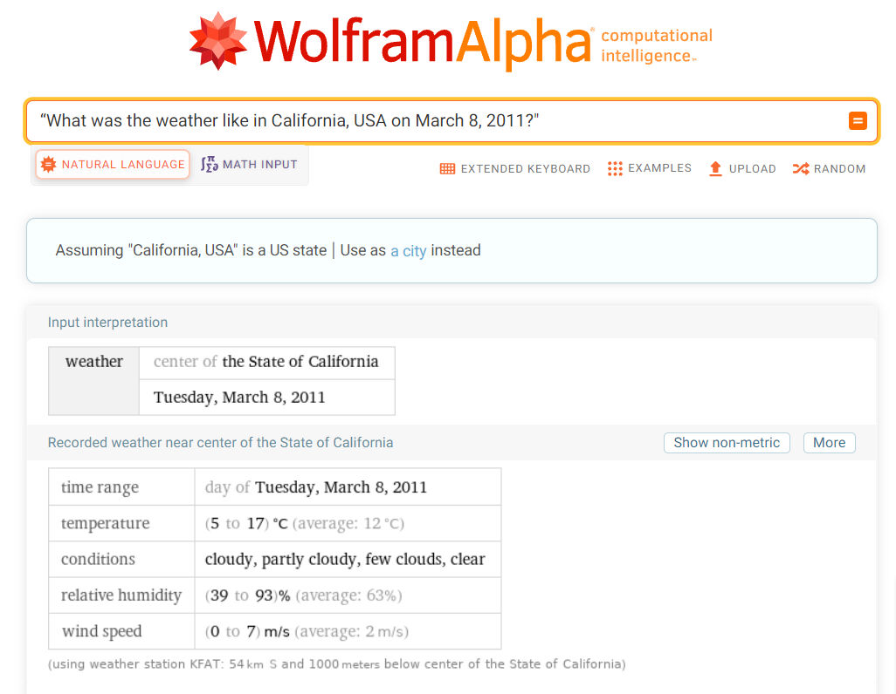
Avots: Wolfram Alpha Search Result
Apvienojot visas iegūtās norādes un pierādījumus, var izvērtēt, vai ir kaut kas tāds, kas rada neskaidrības. Lai gūtu skaidrību, dažus tehniskos apskatus var veikt, izmantojot video rediģēšanas programmatūru (VLC Media Player, Avidemux Video Editor, Vegas Pro u.c.) (Browne, n.d., p. 52).
“Viltus seja” (deepfake)
“Viltus seja” ir audiovizuāls manipulācijas veids, kas ļauj izveidot reālistiskas cilvēka sejas, balss vai darbību simulācijas (Gregory, 2020). Tā ir mākslīgā intelekta tehnoloģiju iesaistīšana manipulācijās ar fotoattēliem un video. “Viltus sejas” pamatā ir mašīnmācīšanās tehnika, ko sauc par ģeneratīvi pretrunīgo tīklu (Generative Adversarial Network (GAN)) . Tas izmanto algoritmu kopu, lai atpazītu attēlu. Tādējādi tas spēj radīt viltotus attēlus, aptverot to īstās iezīmes (Metz, 2017; Schwartz, 2018; Gregory, 2020).
Tas var radīt nopietnu kaitējumu, liekot domāt, ka persona izdarījusi ko tādu, ko patiesībā nav. Piemēram, tas var izmantot personas seju, lai izveidotu seksuālus attēlus un video. Turklāt bažas rada arī “viltus seju” izmantošana dezinformācijā (Gregory, 2020).
Norādes, kurām īpaši jāpievērš uzmanība, lai pārliecinātos, vai tā ir “viltus seja” (Gregory, 2020):
- Manāmi savāda pieres vai matu līnija, kā arī nepārtraukta sejas kustība
- Zobu trūkums
- Īpaši gluda āda
- Acu mirkšķināšanas neesamība
- Personā netiek novērotas pēkšņas kustības, žesti un mīmika
- Neatbilstība, kad cilvēks pagriežas vai kustina galvu.
Lai gan ne vienmēr izdodas atklāt “viltus seju”, taču noteiktas norādes un pārbaudes metodes var palīdzēt (skatiet “Attēla patiesuma pārbaude” un “Video patiesuma pārbaude”). (Gregory, 2020; Marconi & Daldrup, 2018).
Piemērs: video nav redzama Donalda Trampa reakcija, kad kāds kliedz “Allahu Akbar”.
2018. gadā sociālajos tīklos tika publicēts video, apgalvojot, ka tajā Donalds Tramps bailīgi reaģējis uz pūlī izkliegto saucienu “Allahu Akbar”.

Lai veiktu šāda video patiesuma pārbaudi, tas jāsadala kadros un jāveic Google reverso attēlu meklēšanu. Veicot augstāk minētā piemēra pārbaudi, tika atrastas vairākas video versijas, ko 2016. gadā publicēja dažādi ziņu kanāli. Un vārdi “Allahu Akbar” šajos autentiskajos ierakstos nav dzirdami. Saskaņā ar Washington Post teikto, video redzama Donalda Trampa reakcija pret protestētāju, kurš uzlēca uz skatuves viņa mītiņa laikā Ohaio štata Deitonas pilsētā 2016. gada 12. martā (Teyit, 2018, August 6).
Atrašanās vietas patiesuma pārbaude
Vēl viens elements, ko var izpētīt patiesuma pārbaudes procesā, ir atrašanās vietas informācija. Lai to izdarītu, vispirms jāparliecinās, vai saturā ietverta informāciju par atrašanās vietu. Tādas platformas kā Flickr, Picasa, Instagram, Twitter piedāvā saviem lietotājiem iespēju pievienot atrašanās vietu.
Atrašanās vietas informāciju var mēģināt iegūt, salīdzinot satura atrašanās vietu ar esošajiem satelīta fotoattēliem un fotoattēliem, kas ietver automātisku atrašanās vietas informāciju (Silverman & Tsubaki, n.d., p. 101). Šim nolūkam var izmantot Google Maps, Google Street View, Yandex Maps, Bing Maps, Google Earth, Wikimapia, Geofeedia un līdzīgas platformas. Salīdzināšanas procesās ieteicams pārbaudīt sekojošus elementus(Silverman & Tsubaki, n.d., p. 101):
- Ielu detaļas (piemēram, norādes, uzraksti uz ēkām, ielu zīmes, reklāmas stendi u.c.)
- Ainavas (piemēram, kalnu grēdas, koku līnijas, upes u.c.)
- Ēkas un orientieri (piemēram, baznīcas, stadioni, tilti u.c.)
- Laika apstākļi (piemēram, dienas gaisma vai ēna, lai palīdzētu noteikt aptuveno laiku)
- Karogi
- Valoda (jo īpaši videoklipos, var pārbaudīt akcentu un dialektu saderību ar ģeogrāfisko atrašanās vietu).
Ja svešvaloda tiek izmantota ielu detaļās, piemēram, izkārtnēs, uzrakstos uz ēkām, ielu vai norāžu zīmēs, stendos, to tulkošanai var izmantot Google Translate un līdzīgus tulkošanas rīkus (Silverman & Tsubaki, n.d., p. 101).
Fotoattēlus no Google Street View vai Google Maps var izmantot, lai saturā ietverto informāciju salīdzinātu ar fotoattēu automātiskās atrašanās vietas informāciju (Higgins, 2015; Silverman & Tsubaki, n.d., p. 101).
Piemērs: pieņemsim, ka ziņu reportāžā izmantots attēls vai video, kas, iespējams, saistīts ar notikumu Celimontana laukumā pie Kolizeja Itālijā. Ja vēlamies pārbaudīt atrašanās vietas informāciju, varam izmantot Google Street View.
Sākotnēji Google Maps meklētājā ierakstiet "Piazza Celimontana".

Avots: Google Maps Search for “Piazza Celimontana, Roma, Italy”
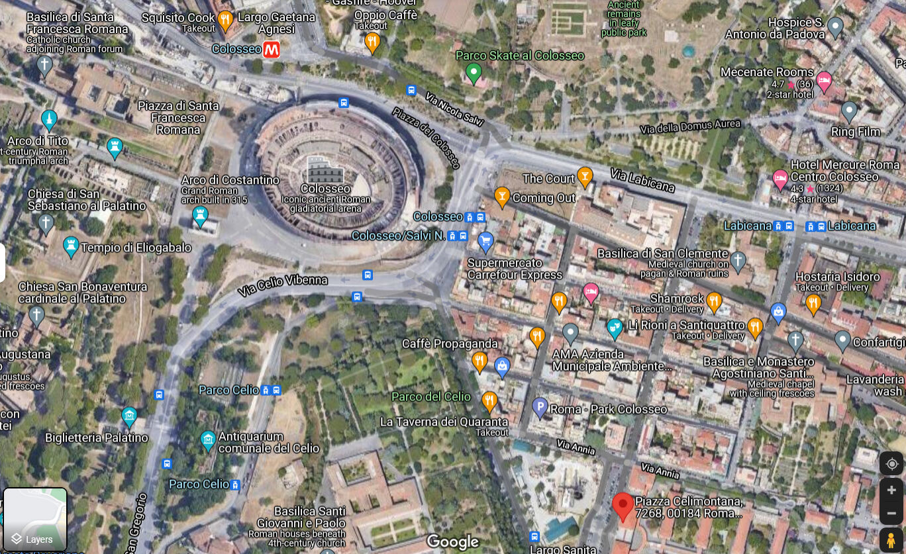
Avots: Google Maps Search for Piazza Celimontana, Roma, Italy
Kartes skatā var redzēt, ka "Piazza Celimontana" atrodas netālu no Kolizeja. Pietuvinot skatu, var apskatīt ielu detaļas (piemēram, labi zināmas ēkas, karogus).
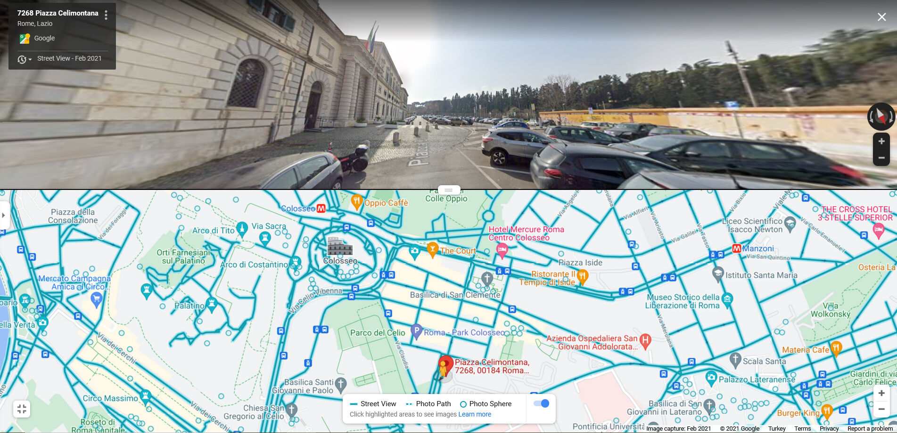
Avots: Google Street View for Piazza Celimontana, Roma, Italy

Avots: Google Street View for Piazza Celimontana, Roma, Italy
Google Earth sniedz piekļuvi arī senākiem satelītattēliem. Tāpēc tā reljefa skatu var izmantot arī vecākiem fotoattēliem un videoklipiem (Silverman & Tsubaki, n.d., p. 101).
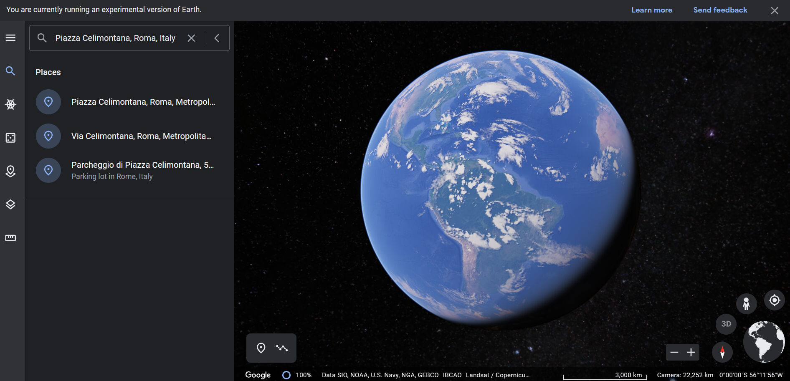
Avots: Google Earth search for Piazza Celimontana, Roma, Italy

Avots: Google Earth view for Piazza Celimontana, Roma, Italy
Lai gan sociālie tīkli, piemēram, Twitter, Facebook un Instagram, sniedz lietotājiem iespēju pievienot atrašanās vietu, tie bieži izņem metadatus (izņemot Flickr). Tā vietā var izmantot Geofeedia, lai noteiktu GPS datus no augšupielādējošās mobilās ierīces (Silverman & Tsubaki, n.d., p. 98-99).
Papildus šo rīku izmantošanai tiek ieteikts pārbaudīt, pirmkārt, vai oficiālie mediji publicējuši līdzīgus attēlus. Otrkārt, vai arī citias personas no konrētās vietas augšupielādējušas attēlus sociālajos medijos. Tādējādi redzot interesējošo no dažādiem leņķiem un, nodrošinot attēlu uzticamību (Barot, n.d., p. 40).
Sociālo mediju kontu patiesuma pārbaude
Lietotājvārdi un identitāte
Uzsākot sociālo mediju konta izpēti, vispirms pārbaudiet, vai tas atzīmēts ar zilu atzīmi (ķeksīti), kas norāda,ka konts apstiprināts attiecīgajā platformā (piemēram, Facebook, Twitter, Instagram) (Silverman & Tsubaki, n.d., p. 99-100). Novietojot peles kursoru virs zilās atzīmes, tiks uzrādīts apstiprinājums, ka tas ir verificēts konts. Ja šāds komentārs neparādās, iespējams, ar zilā krāsas atzīme pievienota ar Photoshop palīdzību (Wardle, n.d., p. 28). Lai sociālo mediju kota reģistrācija tiktu apstiprināta, katrai platformai noteikti konkrēti kritēriji (Instagram help center, 2021; Twitter help center, 2021). Pirms veicat izvēli, kurā no platformām veidosiet savu kontu, izpētiet tās norādītos kritērijus.

Sociālo tīklu lietotāji iedalās divās grupās. Vieni, kuri katrā platformā izvēlas reģistrēties ar atšķirīgu lietotājvārdu. Otri, kuri dot priekšroku vienam un tam pašam lietotājvārdam. Šī iemesla dēļ ir nepieciešams apskatīt meklēto lietotājvārdu no vairākām dažādām vietnēm (Zadrozny, 2020). Lietotājvārdu un identitātes meklēšanai var izmantot šādus rīkus un platformas (Google, Namechk, Namecheckr, Spokeo, Webmii, LinkedIn, haveibeenpwned.com, Dehashed.com utt.).
Piemērs: izvēlamies izpētīt, vai sociālo mediju konts, kuru atradām, pieder dziedātājai Britnijai Spīrsai, kā arī, vai viņai izveidoti arī citi konti.
Google: Sākotnēji Google vietnē veic meklēšanu pēc liettājvārda vai personas identifikācijas informācijas.

Avots: Google Search

Namechk un Namecheck: iesaka izmantot, lai noskaidrotu, vai interesējošais lietotājvārds un e-pasts pastāv dažādās platformās (Zadrozny, 2020).
Piemērs: veiksim meklēšanu platformās Namechk un Namecheck ar lietotājvārdu "britneyspears", ko Britnija Spīrsa izmanto savā Instagram kontā:

Avots: Namechk Search for the username “britneyspears”
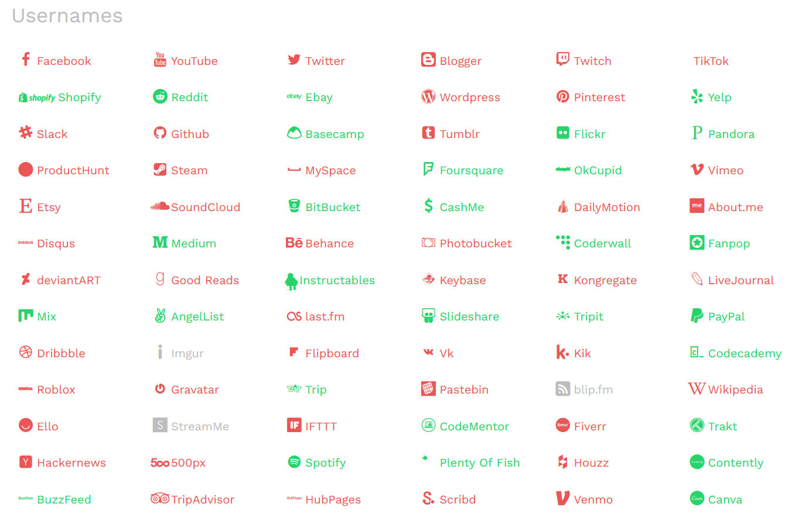
Avots: Namechk Search Results for the username “britneyspears”
Platformas, kurās tiek izmantots lietotājvārds "britneyspears", meklēšanas rezultātā tiek parādītas kā "reģistrētas" (sarkanā krāsā) vai "nav pieejams". Tādējādi var izsekot meklējamās personas citus iespējamos sociālo mediju kontus.
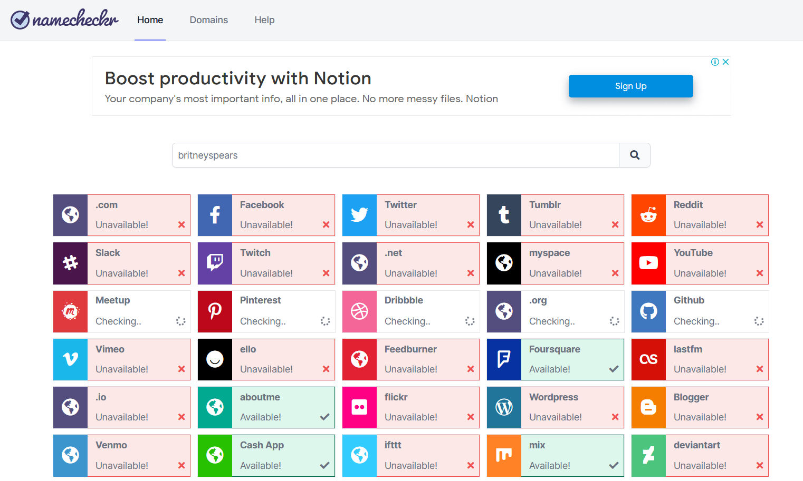
Avots: Namecheckr Search Results for the username “britneyspears”
Spokeo: varat meklēt personu pēc vārda, e-pasta, tālruņa numura vai lietotājvārda (Verification handbook, n.d.).
Piemērs: veiksim meklēšanu vietnē Spokeo, izvēloties vārdu Britnija Spīrsa.

Avots: Spokeo Search for Britney Spears

Meklēšanas rezultātā iegūstam Britnija Spīrsas vārdā nosaukto cilvēku atrašanās reģionu, viņu adreses, tālruņu numurus, e-pasta adreses un dažu citu cilvēku vārdus, ar kuriem viņi sazinās.

Atkarībā no nepieciešamās informācijas, izmantojot izvērsto meklēšanas opciju, varat izvēlēties dažādus filtrus (piemēram, vecumu, štatu, valsti) precīzāku un plašāku rezultātu iegūšanai.
Webmii: varat meklēt tīmekļa saites pēc personas vārda (Verification handbook, n.d.).
Piemērs: veicot meklēšanu vietnē Webmii ar vārdu Britnija Spīrsa, iespējams redzēt platformu saites, kurās viņa atradusies.

Avots: Webmii Search for Britney Spears
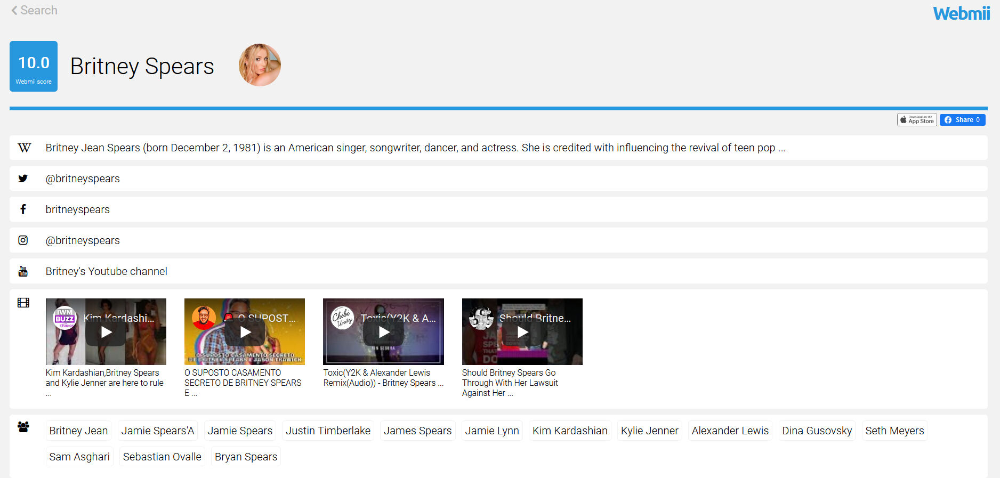
LinkedIn: varat gūt priekšstatu par personas identitāti, apskatot tās darba vēsturi un kontaktus (Verification handbook, n.d.).
Piemērs: veiksim meklēšanu vietnē LinkedIn, lai iegūtu informāciju par vienu no 2021. gada Nobelas prēmijas laureāti Mariju Resi (Maria Ressa).

Avots: LinkedIn

Meklēšanas rezultāti liecina, ka atrodami vairāki konti ar vienādu vārdu. Taču starp tiem var noteikt, kurš konts pieder žurnālistei Marijai Resai.

Noklikšķinot uz kontu, kurš meklēšanas rezultā novietots lapas augšpusē, redzams, ka pieejamā informācija, piemēram, valsts, valoda, notikumi, ir savietojama ar meklēto personu.
Papildus iepriekš minētajām platformām, haveibeenpwned.com un Dehashed.com sniedz informāciju par datu pārkāpumiem, kas saistīti ar lietotāja informāciju. Tos var arī izmantot, lai pārbaudītu e-pasta vai tālruņa numura patiesumu. Tāpat var izmantot arī tādas platformas kā Pipl un Skopenow, kas tiek piemērotas ASV dzīvojošo cilvēku meklēšanai (Zadrozny, 2020).
Attiecības
Aplūkojot, savstarpējos kontaktus un to mijiedarbību tiešsaistē, iespējams gana daudz uzzināt par konkrta cilvēka personīgo dzīvi un aktualitātēm tajā. Šim nolūkam var izpētīt interesējošās personas sociālā konta konta pirmos sekotājus un draugus (Zadrozny, 2020). Izmantojot rīku TweetBeaver, iespējams meklēt sasaisti starp lieliem kontiem un pārskatīt laika joslas ierakstus un “patīk” atzīmes mazākos kontos. Lai izmantotu TweetBeaver, nepieciešams Twitter konts.
Piemērs: izvelamies dziedātājas Britnijai Spīrsas Twitter kontu. Šī konta īpašnieka statusu var pārbaudīt, izmantojot Britnijas Spīrsas māsas Džeimijas Linas Spīrsas Twitter kontu. To veicam, izmantojot TweetBeaver.

Avots: TweetBeaver
Kontu statuss ir atlasīts no dažādām TweetBeaver opcijām. Pēc tam attiecīgajos laukos tiek ierakstīti pārbaudāmo kontu lietotājvārdi.

Avots: Checking Britney Spears and her sister's Twitter following status with the TweetBeaver
Meklēšanas rezultātos redzams, ka konti seko viens otram.

Avots: Britney Spears and her sister's Twitter following status
Izmantojot rīku Twitter Advanced Search, tiek atrasti interesējošā konta pirmie tvīti, kā arī noteiktā laika periodā nosūtītie tvīti. Iespējams veikt dažādus meklējumus, izmantojot Twitter izvērstās meklēšanas filtrēšanas iespējas (vārds, gads utt.).
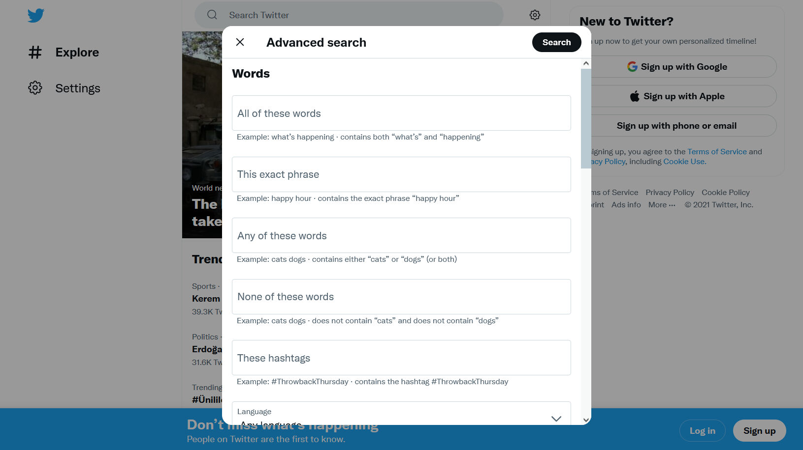
Avots: Twitter Advanced Search
Dažkārt sociālo tīklu lietotāji mēdz dzēst savus ierakstus (piemēram, tvītus, Facebook ziņas). Taču izdzēstajam ziņām var piekļūt, izmantojot Wayback Machine, archive.today.
Fotoattēli
Profila fotoattēli ir vēl viens elements, kas palīdz izmeklēt sociālo mediju kontus un pārbaudīt to īpašnieku identitāti. Plašāku informāciju skatiet sadaļā “Fotoattēlu patiesuma pārbaude”.
Tīmekļa vietnes izpēte
Nereti tīmekļa vietnes izmanto cilvēki, kas nodarbojas ar mediju manipulācijām, lai gūtu ienākumus, ievāktu personisku informāciju, izveidotu drošu tiešsaistes telpu (Silverman, 2020a). Turklāt tīmekļa vietnēs esošais saturs var būt saistīts ar aizdomīgu saturu, kas kopīgots arī sociālajos medijos. Šī iemesla dēļ nepieciešams pārbaudīt tekstu, fotoattēlus, video un līdzīgu saturu arī tīmekļa vietnēs.
Līdzīgi kā sociālajos medijos, arī tīmekļa vietnēs iepriekš publicētā informācija var tikt izdzēsta. Tā rezultātā, dzēšot jebkāda satura (teksta, attēla, video) saiti tīmekļa vietnē, šim saturam vairs nevar piekļūt. Ja tīmekļu vietnes saites vai saturs tajās reģistrēts vietnēs, kas nodrošina arhīvu pakalpojumus, piemēram, Wayback Machine, archive.today, izdzēstajam saturam var piekļūt. Arhīvu pakalpojumi ne tikai nodrošina piekļuvi lapām un /vai saturam, kas var kalpot kā pierādījumi, bet arī novērš tieši saskari ar vietnēm un/vai kontiem, kas izplata nepatiesu informāciju. Izmantojot šos rīkus, iespējams arī uzraudzīt tīmekļa vietnes izmaiņas laika gaitā (Silverman, 2020a). Wayback Machine ļauj izsekot atšķirības, salīdzinot konkrētu lapu vairākas versijas, kas saglabātas dažādos laikos (Graham, 2021).
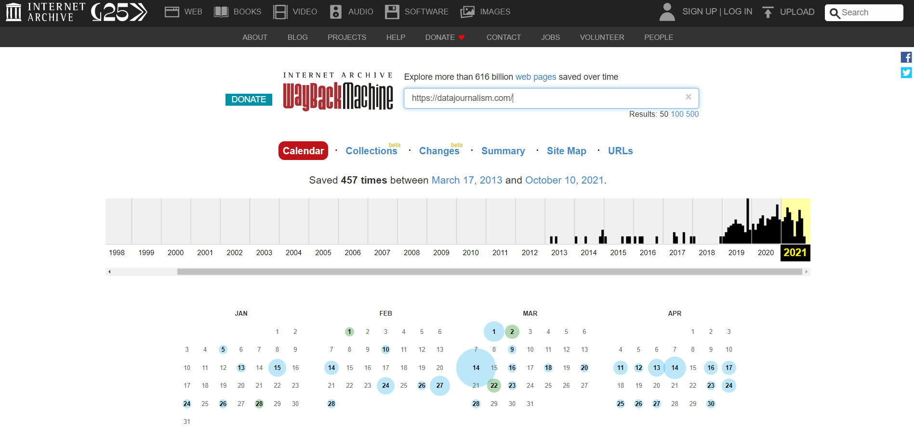
Avots: Archived pages of “https://datajournalism.com/” website on Wayback Machine
Pirmais solis tīmekļa vietnes patiesuma pārbaudē ir personīgais priekšstata par tās saturu (Silverman, 2020a).
- Lai saprastu, kādam nolūkam tīmekļa vietne izveidota, varat apskatīt sadaļu “Par”, kurā bieži tiek norādīts, kas to izveidojis un pārvalda, kādi ir tās mērķi utt. Ja šādas sadaļa nav vai, ja tā ir tukša, to var uzskatīt par aizdomīgu norādi. Tas rada iespaidu, ka vietne, iespējams, izveidota pārsteidzīgi, vai, ka informācijas tiek slēpta. Tāpat šajā sadaļā ieteicams arī pārbaudīt, vai atklāta kāda fiziska vai juridiska persona, vai uzņēmuma nosaukums. Ja minēti vārdi, var pārbaudīt, vai šī informācija dažādās lapās ir konsekventa.
- Ja vietnē tiek publicēti raksti, jāpievērš uzmanība autora informācijai un linku esamībai/neesamībai. Ja linki ir aktīvi, ieteicams pārbaudīt, vai tie novirza uz informāciju par autoru, viņa sociālo mediju kontiem vai citām saistītām lapām, kurās būtu informācija par viņu.
- Tapat var pārbaudīt, vai atrodami linki uz sociālo mediju kontiem, kas saistīti ar tīmekļa vietni. Šie linki parasti “paslepti” zem sociālo mediju platformu, piemēram, Facebook, Twitter, Instagram, ikonām. Novietojot peles kursoru virs šīs ikonas, pārlūkprogrammas apakšējā kreisajā stūrī varat redzēt, uz kuru URL tā novirza.
- Lai pārbaudītu tīmekļas vietnē piedāvātā satura (teksta, vizuālā un tamlīdzīgā) oriģinalitāti, iesakāms pārbaudīt, vai konkrētais saturs nokopēts no citas tīmekļa vietnes. Tāpat, vai šajā tīmekļa vietnē netiek izplatīta maldinoša informācija, kā arī, vai nav centieni izcelt noteiktu tēmu.
Vēl viena lieta, ko vērts pārbaudīt par tīmekļa vietni, ir pamata reģistrācijas informācija, piemēram, domēna nosaukums un tā izveides datums. Atsevišķos gadījumos iespējams iegūt informāciju par personu vai iestādēm, kas maksājušas par domēna vārda reģistrāciju. Šim nolūkam var izmantot tādas platformas kā who.is, whois.net vai ICANN LookUp. Domēna vārda meklēšanai var izmantot arī rīku DomainBigData. Ja, meklējot domēna vārdu, tiek teikts "Registration confidential", "WhoisGuard Protected" vai "Perfect Privacy LLC", tas norāda, ka domēna vārda privātums ir aizsargāts. No otras puses, tiek parādīts domēna vārda pēdējais reģistrācijas datums, kad beigsies tā derīguma termiņš, kā arī redzama tīmekļa vietnes servera IP adrese (Silverman, 2020a).
Piemērs: apskatīsim domēna vārda informāciju vietnē “The Information”.
Rezultāts sadaļā pie reģistrētāja informāciju parādās frāze "Perfect Privacy LLC". Tas norāda, ka domēna vārda konfidencialitāte ir aizsargāta.

Avots: Search result for “The Information” web site on who.is
Lai veiktu padziļinātāku tīmekļa vietnes patiesuma pārbaudi, papildus satura un avota pārbaudei, var izpētīt vietnes avota kodu (Silverman, 2020a).
Piemērs: Vladimirs Putins neaizliedza alkohola tirdzniecību Krievijā uz 11 dienām.
Vairākās ziņu tīmekļa vietnēs tika apgalvots, ka Krievijas prezidens Vladimirs Putins 2021. gada maijā, kad paredzētas 11 dienu garas valsts svētku brīvdienas, aizliegs alkohola tirdzniecību. Veicot šo ziņu analīzi, atklājās, ka varas iestāžu izdotajos lēmumos nav ietverts alkohola aizliegums, kā arī citos valdības paziņojumos šāds aizliegums nav minēts.

Atslēgvārdu meklēšana mūs noved pie konta ar nosaukumu “Panorama” , kas ir pretenziju avots. Kontam, kuram Twitter ir vairāk nekā 50 tūkstoši sekotāju, apraksta sadaļā norādīts, ka tas veido parodiju pārraides. Šis piemērs pierāda, ka parodiju saturu bieži var sajaukt ar patiesiem faktiem, un tas mēdz nonākt pat mediju virsrakstos (Teyit, 2021, April 30).
Interneta roboti un troļļi
Pamatinformācija par interneta robotiem un troļļiem apkopota 4. nodarbības izklāstā. Šī apakšnodaļa iekļauj informāciju, kā atpazīt interneta robotus un troļļus.
Kas ir interneta robots?
Interneta robots ir lietojumprogramma, kas automātiski var veikt uzdevumus, ko tam uzticējuši cilvēki (Wild & Godart, 2020). Par interneta robotiembieži tiek diskutēts publiskajā telpā, kā arī tie aktīvi darbojas sociālajos tīklos. Sociālajos tīklos tos var izmantot, lai izplatītu noteiktus ideoloģiskus vēstījumus un nereti radītu iespaidu, ka konkrētai tēmai, personai, saturam vai mirkļbirkai ir ievērojams atbalstītāju skaits. Sociālo mediju robotprogrammatūras parasti ir atrodamas trīs galvenajās kategorijās (Wild and Godart, 2020):
- Ieplānotais robots (the scheduled bot)
- Novērošanas robots (the watcher bot)
- Pastiprinātāja bots (the amplifier bot)
Dezinformācijas kontekstā mēs bieži sastopamies ar pastiprinātāju robotiem, kuru mērķis ir veidot sabiedrisko domu internetā. Tos var izmantot, lai parādītu, ka indivīdiem un organizācijām ir vairāk sekotāju nekā patiesībā. Pastiprinātāju robotu tīklu var arī izmantot, lai ietekmētu tēmturu izplatību, izplatītu saiti vai vizuālu saturu, nosūtītu surogātpastu, diskreditētu kādu tiešsaistē vai liktu šai personai izskatīties strīdīgai vai asi kritizētai (Wild and Godart, 2020).
Papildus iespējams sastapties ar sociālo mediju kontiem, kuros ir dabisku un mākslīgu darbību sajaukums, ko dažreiz pārvalda automātiski (roboti) un dažreiz reāli cilvēki. Šādus kontus sauc arī par kiborgiem (cyborgs) (Wild and Godart, 2020).
Kā atpazīt interneta robotus?
Lai gan robotu iegāde un izveide ir salīdzinoši vienkārša, taču sarežģītāka ir to tīkla uzturēšana, kas demonstrētu cilvēkiem līdzīgu uzvedību (Wild and Godart, 2020). Izstrādāti dažādi rīki, kas palīdz noteikt, vai attiecīgais konts ir robots. Tomēr jāpatur prātā, ka rezultāti, kas iegūti, izmantojot noteiktu rīku, neatspoguļo pilnīgu skatījumu, un tie nedrīkst būt vienīgais iemesls, izdarot secinājumus. Šie rīki var būt labs sākumpunkts, taču nav universāla kritērija robotu identificēšanai, kas nodrošinātu 100% precizitāti. Pagaidām nav arī vienprātības par to, kā kaut ko klasificēt kā robotu (Wild and Godart, 2020).
Botometer ir Indiānas Universitātes sociālo mediju observatorijas un Tīkla zinātnes institūta kopīgs projekts. Tas pārbauda Twitter kontu darbību, piešķirot tiem punktu skaitu. Jo augstāki rādītāji, jo vairāk robotiem līdzīgu darbību (Botometer, n.d.).

Avots: Botometer
Bot Sentinel nodrošina publisku ASV Twitter kontu datubāzi, kuros novērotas aizdomīgas darbības. Datubāzes mērķis ir apkopot vienuviet kontus, kas pastāvīgi pārkāpj Twitter noteikumus, identificējot tos kā “problemātiskus” (Bot Sentinel, 2021; Wild and Godart, 2020).

Avots: Bot Sentinel
Nesen pievienotos kontus un to, vai tie ir aizdomīgi vai nē, var redzēt Bot Sentinel vietnē.

Avots: Recently added accounts on Bot Sentinel and their data
Papildus interneta robotu atklāšanā svarīgi arī uzraudzīt mākslīgo darbību sociālajos tīklos. Lai uztvertu tipisos signālus no aizdomīgiem kontiem, kuros Twitter vai citos sociālajos tīklos tiek parādīta automātiska darbība, var pārbaudīt šādus punktus (Wild and Godart, 2020):
- Aizomīgs profila attēls
- Profila fotoattēla trūkums
- Izmanto nozagtu fotoattēlu
- Karikatūru varoņu vai dzīvnieku izmantošana kā profila attēli.
2. Automātiski izveidoti lietotājvārdi: katrs Twitter lietotājvārds ir unikāls. Šī iemesla dēļ robotprogrammatūra parasti izmanto šos kritērijus, lai ģenerētu lietotājvārdus, kas vēl nav izmantoti (Wild and Godart, 2020):
|
“Username followed by a four-digit number” |
“Twelve random characters in length which can consist of (a-zA-Z and 0-9)” |
“Any first name followed by a random eight-digit number, indicating that the default username generated by Twitter has been used.” |
|
hero_2345 hero_3476 hero_9812 |
fH23pGr50LaX 7At35kd89QwS Xr16xHW4n6DK |
George89567438 Mary91827364 Peter25384128 |
3. Konta darbība neatbilst tā vecumam: šādā situācijā nepieciešams rūpīgāk izpētīt konta tvīta aktivitātes (Wild and Godart, 2020):
- Ja jaunizveidotajam kontam ir liels sekotāju skaits
- Ja jaunizveidotais konts īsā laikā ir daudz tvītojis
- Vecs konts ir ļoti aktīvs, taču tam ir maz sekotāju.
4. Aizdomīgi tvītu modelis: cilvēkiem var būt noteiktas preferences attiecībā uz dienām un laikiem, kad viņi veido tvītus. Tomēr maz ticams, ka persona noteiktās dienās konsekventi publicēs ziņas un citās dienās klusēs (Wild and Godart, 2020).
Kas ir interneta troļļi?
Trollis ir persona, kas tīši ierosina tiešsaistes konfliktu vai aizskar citus lietotājus, lai novērstu no sevis uzmanību un radītu šķelšanos interneta lietotāju vidū, ievietojot musinošus vai savstarpēji nesaistītus ierakstus tiešsaistes kopienā vai sociālajos tīklos. Viņu mērķis ir provocēt citus uz emocionālu reakciju un izjaukt diskusijas (DFRLab, 2018).
Kā atpazīt interneta troļļus?
Troļļi bieži rāda profilus sociālajos tīklos, kas atbalsta un aizstāv ideoloģiski saskaņotas viltus ziņas, strīdas ar cilvēkiem, publicē aizvainojošus komentārus par citiem lietotājiem un sabiedrībā zināmām personām, viņiem nepatīk noteiktas idejas un cenšas iebiedē tos, kas šīs idejas publicē un atbalsta (The Center for Information Technology and Society, n.d.).
Soļi, kuri piedāvāti interbeta robotu atpazīšanai, var tikt izmantoti, lai atpazītu troļļu veidotos kontus sociālajos tīklos. Šajā kontekstā tāda informācija kā izmantotais profila attēls,, sekotāju skaits, konta izveides datums, informācijas dalīšanās modeļi var sniegt priekšstatu par to, vai konta īpašnieks ir trollis.
Piemērs: kādās situācijās tiek izmantoti interneta roboti un troļļi?
Pieaug tendence interneta robotus un troļļus izmantot surogātpasta un nomelnošanas aktīvistātēs, lai izplatot dezinformāciju.Tāpat kā visās valstīs, arī Meksikā Twitter tēmturi tika izmantoti, lai pievērstu uzmanību svarīgiem politiskiem jautājumiem. Tīmekļa birkas, piemēram, #YaMeCanse, #SobrinaEBN un #Acapulco, Twitter ātri ieguva apgriezienus, kļūstot par tendu.

(Tvīti, kas izmantoja tēmturi #SobrinaEBN hashtag, Avots: Sánchez, 2015, July 22)
Neilgi pēc mirkļbirku aktīvas izplatīšanās, tūkstošiem lietotāju sāka publicēt nejaušu saturu, kurā bija pievienoti šie tēmturi. Pētnieki apgalvoja, ka sarežģīti noteikt, kurš izveidja šo uzbrukumu. Mērķis bija iedarbināt Twitter pretsurogātpasta mērijumus, noņemot tēmturus no populārākajām tēmām. Tīkla analīze parādīja atšķirību starp īstajiem un viltotajiem tēmturiem (Trewinnard, 2016, February 11).
Piemērs: mežu ugunsgrēki Turcijā
2021. gadā 53 Turcijas provincēs plosījās vairāk nekā 270 mežu ugunsgrēki, kuru laikā bojā gāja 9 cilvēki. Valdības bezdarbības ietekmē izplatījās tēmturis #HelpTurkey. Amatpersonas apgalvoja, ka tēmturu izplatība veidota mākslīgi, lai citu acīs Turcija izskatītos vāja. Taču pirmo 500 tūkstošu tvītu analīze liecina, ka dalīšanās ar tvītiem notikusi organiski. To pierādā arī desmitiem vairāk sekotāju un pārbaudītu kontu, kam pateicoties, kampaņa kļuva tik vērienīga. Šādi gadījumi pierāda, ka interneta roboti un troļļi var izraisīt informācijas traucējumus ne tikai ar savām darbībām, bet arī vien ar domu, ka tie ekskistē (Teyit, 2021, August 4).
Piemērs: interneta troļļu provokāciju ietekmē indiešu restorāns nonāk uz slēģšanas robežas.
Indijas restorāna īpašniece Šrina Beguma (Shrina Begum) nespēja saprast iemeslu telefona zvaniem, kuros viņa tika apsūdzēta cilvēka gaļas pārdošanā. Tas viņu pamudināja uzsākt radušos baumu izsekošanu. Viņa atrada vietni Channel23news.com, kurā bija publicēts stāsts, ka restorāns Karri Tvists pieķerts cilvēka gaļas pārdošanā un tā īpašnieks ir arestēts.

(Viltus stāsts par cilvēku gaļas tirgošanu Indijas restorānā vietnē Channel23News.com).
Tiešsaistes izmeklēšana atklāja, ka pastāv vismaz vēl 18 līdzīgas izjokošanas vietnes kā Channel23News.com, kuras domēna reģistrācijas ierakstos norādīts kā “Korry Scherer”. Šīs vietnes aicina cilvēkus izdomāt viltus ziņu stāstus un dalīties tajos Facebook. (Silverman & Spary, 2017, May 29).
Gadījumu izpēte
1. gadījuma izpēte: koki tika izgāzti ar saknēm, taču cita iemesla dēļ
Turpinoties konfliktam starp Indiju un Pakistānu, sociālajos tīklos plaši izplatās dažādi apgalvojumi, izraisot dusmas un pastiprinot spriedzi abās valstīs. 2021. gada 8. augustā sociālo mediju platformās izplatījās video ar parakstiem, kas nepatiesi apgalvoja, ka Pakistānas vietējie iedzīvotāji izrauj stādus ar saknēm, sakot, ka koku stādīšanu ir pret islāmu. Apgalvojums sāka izplatīties vēl ātrāk pēc tam, kad politiķi un citi sabiedrībā zināmi cilvēki savos Twitter kontos sāka dalīties ar šiem video.
Surendra Punia, vienas no divām lielākajām Indijas politiskajām partijām Bharatiya Janata loceklis un bijušais armijas majors, dalījās ar video savā Twitter kontā, kurā apgalvoja: “Imran Khan copied PM Shri Modi's 'Tree Plantation Drive' in Pakistan but his followers uprooted all trees because they feel "Planting trees is against Islam".

Neilgi pēc tam video ar tādu pašu apgalvojumu sāka izplatīties Turcijas sociālajos medijos. Dažādas ziņu aģentūras dalījās ar šo apgalvojumu, iepriekš neveicot faktu pārbaudi.

(Avots: Caption, 2021, August 11)
Pirmkārt, nepieciešams noskaidrot, kur un kad uzņemti video materiālā redzamie kadri. Lai to paveiktu, jāizmanto reversā attēlu meklēšana ar “atslēgas” kadru no aizdomīgā video. Veicot šādu meklēšanu, tika atrasts apraksts Pakistānas tīmekļa vietnē Khabarnaamaa, kurā pieejami ekrānuzņēmumi no tā paša video, nosaucot to par incidentu, par kuru ziņots Khiberas Bara Mandi apgabalā.
Saskaņā ar ziņām, incidents notika pēc tam, kad Pakistānas premjerministrs uzsāka valsts lielāko koku apstādījumu ierīkošanu. Video redzams notikušais strīds par zemes īpašumtiesībām, jo netika saņemta visu iesaistīto pušu atļauja apstādījumu veikšanai uz tās. Detalizētāku informāciju un paziņojumus, ko valdības pārstāvji sniedza pēc incidenta, var atrast, meklējot atslēgvārdus dažādās vietnēs, piemēram, Pakistan Today, Dawn, The News, un Samaa.
Lai gan publicētais video ir autentisks, tā virsraksts, kurā apgalvots, ka tajā redzams, kā islāma ekstrēmisti izrauj kokus, jo to stādīšana ir pret islāmu, ir nepatiess. Konteksta izprašana ir tikpat svarīga kā zināt piemērotus faktu pārbaudes rīkus. Vienkārša atslēgvārdu meklēšana varētu būt viena no metodēm, kas palīdzētu mazināt dezinformācijas izplatīšanos (Teyit, 2020, August 12).
2. gadījuma izpēte: sensacionāls apgalvojums “Uiguru meitene tiek pārdota”
Sociālajos medijos ievietots video ar apgalvojumu, ka Ķīnas komunistiskā partija tirgū pārdod uiguru meiteni, kuras ģimene atrodas ieslodzīto nometnē. Šāds apgalvojums tika izplatīts dažādās valodās.

(Ieraksts tulkojums no ķīniešu valodas: Virsraksts: Briesmīgs skandāls - Ķīnas komunistiskās partijas biedri pārdod mazus bērnus no Austrumturkistānas, kuru vecāki ieslodzīti nometnēs. Pārdevējs vēlas par meiteni saņemt 200 000 juaņu. Pircējs: “Ļoti augsta cena.” Pārdevējs: “Ja patiks, es cenu pazemināšau. Cik jūs jūs dodat?” Pircējs: “20 juaņas.”)
Uiguri ir lielākā mazākumtautības etniskā grupa Ķīnas ziemeļrietumu Sjiņdzjanas (Xinjian) provincē. Ķīna tikusi apsūdzēta noziegumos pret uiguru populāciju. Lai gan Ķīna noliedz visas apsūdzības, arvien vairāk līdzīgu apgalvojumu turpina sasniegt arī citas valstis.
Reversā attēlu meklēšana atklāj, ka apgalvojums izplatās arī citās valodās, piemēram, arābu un japāņu valodā.
Video dzirdama saruna starp diviem vīriešiem ķīniešu valodā. Turklāt dažas dzirdamās skaņas norāda, ka tas, iespējams, ierakstīts ārpus telpām. Tika apgalvots, ka saruna bijusi par izdevīga darījuma meitenes pārdošanā. Vienā no komentāriem pie japāņu ieraksta pievienots video, kur dzirdamas viena un tā pati saruna, bet attēli attšķiras.

Video redzams TikTok logotips un tālāk norādītie skaitļi parāda, ka tas kopīgots Douyin, kas ir TikTok lietotnes ķīniešu versijā.
Douyin vietnē kopīgojis lietotājs ar kodu "v15366798929". Izmantojot Yandex image search, tekstu var tulkot. Attēlā redzamais teksta "你敢讲我就敢麦" tulkojums - "Ja tu uzdrošinies runāt, es neuzdrošinos ēst kviešus". Skaņas rediģēšanas rīks Audacity var palīdzēt salīdzināt šos divus audio failus un pārliecināties, vai tie ir līdzīgi.
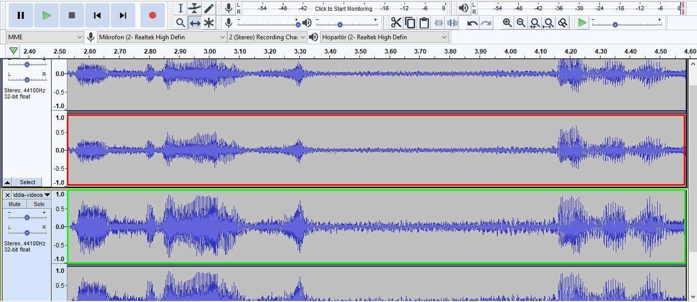
(Sarkanā krāsā atzīmētais apgabals ir oriģinālā video skaņas viļņi, savukārt zaļā krāsā atzīmētais apgabals ir skaņa video, par kuru izteiktas sūdzības.)
Sīkāku informāciju par video redzamo meiteni var atrast arī pie ierakstiem pievienotajos komentāros. Tika apgalvots, ka meitene apmācīta par modeli Guandunas (Guangdong) provincē. Citā komentārā redzams meitenes tēva profils ar dažādām bērna fotogrāfijām.
Neīstajā video ir arī norādes, kas liek domāt, ka meitene atrodas skolā: kā citi bērns t-kreklā ar tādu pašu logotipu un trofejām grāmatu plauktos.
Izpētot apgalvojumus, kas saistīti ar Ķīnu, ir svarīgi domāt vairākos virzienos un paturēt prātā rīkus, kas var palīdzēt pārvarēt kultūras un valodas barjeras (Teyit, 2020, October 22).
Vingrinājumi
1. vingrinājums

Apgalvojums: Fotoattēlā redzams sirds formas zibens spēriens Francijā
Links uz apgalvojumu: https://archive.is/kQKTe
Pamatojoties uz veikto faktu pārbaudi, apgalvojums ir patiess (2. jautājumam). Faktu pārbaudei var veikt tālāk norādītās darbības:
- Apgrieztā attēlu meklēšana parāda Reddit un 9gag ierakstus. Kopīgotās fotogrāfijas redzamas arī vietnes jeanyvesvilla.com labajā pusē. ir redzama šajās vietnēs kopīgotās fotogrāfijas labajā pusē.
- Adrese pašlaik nav sasniedzama. Tomēr fotogrāfa Facebook lapa joprojām ir pieejama, kad meklējam viņu pēc Žana Īva Vilja (Jean Yves Villa) vārda.
- Starp citiem kopīgotajiem zibens fotoattēliem iespējams sasniegt arī apgalvojuma fotoattēlu.
- Attēlu 2016. gada 31. jūlijā uzņēma Žans Īvs Vilja virs Sorges (Sorgues) pilsētas netālu no Aviņonas.

Apgalvojums: Fotoattēlā redzami jaundzimušie Padomju Krievijā, kuri tika iemidzināti ārā, lai stiprinātu viņu imūnsistēmu.
Links uz apgalvojumu: https://archive.is/IHuly
2 vingrinājuma patiesuma pārbaudes piezīmes:
Pamatojoties uz veikto faktu pārbaudi, apgalvojums ir patiess (2. jautājumam). Faktu pārbaudei var veikt tālāk norādītās darbības:
- Reversās attēlu meklēšanas rezultātāti piedāvā dažādas ziņas par šo tēmu. Dažās vietnēs ir tādi skaidrojumi kā “Bērni guļ ārā pēc pusdienām Maskavas dzemdību namā 1958. gadā”. (Pie dažiem ierakstiem attēla apakšā redzama kirilicā rakstīta skaidrojoša piezīme. Piezīmi var iztulkot ar Yandex image search (Yandex attēlu meklēšana pārvērš attēlos esošos tekstus digitālā tekstā).
- Atslēgvārdu meklēšanas rezultāti mūs novirza uz vietni Russia Beyond, kurā tiek kopīgoti stāsti par kultūru, ceļošanu, izglītību, valodu Krievijā. Raksts ar nosaukumu “Kāpēc bērni gulēja stindzinošā aukstumā padomju bērnudārzos?” izskaidro fotogrāfiju stāstu un kultūras ieradumu aiz tām.
- Dmitrijs Baltermants (Dmitry Baltermants) MAMM/MDF (Multimedia Art Museum) ir apgalvojuma fotoattēla autors, kurš bija padomju fotožurnālists.
3. vingrinājums

Apgalvojums: Attēlā redzams pretmasku pikets Londonā
3. vingrinājuma patiesuma pārbaudes piezīmes:
Pamatojoties uz veikto faktu pārbaudi, apgalvojums ir nepatiess (2. jautājumam). Faktu pārbaudei var veikt tālāk norādītās darbības:
- Detalizētāka informācija, lai apstiprinātu, vai fotoattēls uzņemts Londonā: (a) Teksts “..latz” uz zīmes fotoattēla kreisajā stūrī varētu būt mājiens par atrašanās vietu. (b) Redzami vārdi, kuri rada aizdomas, ka tie nav angļu valodā. Tāpat arī tas, kas rakstīts uz citiem plakātiem, nav pilnībā saprotams.
- Pēc oriģinālajā fotoattēlā redzamās metro zīmes “Alexanderplatz” noprotams, ka fotogrāfija ir no mītiņa Berlīnē. Oriģinālajā reklāmkarogā ir rakstīts “#unteilbar - Solidarität statt ausgrenzung”, kas nozīmē “#nedalāms – solidaritāte izslēgšanas vietā”.
- Fotogrāfijas uzņemšanas vietu var atrast Google Maps,apskatot ielu skatus ar Alexanderplatz metro izejām.
Fotogrāfija uzņemta 2018. gada 13. oktobrī demonstrācijas laikā Berlīnē.
Tests
Izmantotie informācijas avoti
Barot, T. (n.d.). Verifying images. In C. Silverman (Ed.), Verification handbook: An ultimate guideline on digital age sourcing for emergency coverage (p. 35-41).
Bot Sentinel. (2021). About.
Browne, M. (n.d.). Verification fundamentals: Rules to live by. Verifying video. In C. Silverman (Ed.), Verification handbook: An ultimate guideline on digital age sourcing for emergency coverage (p. 47-53).
Buttry, S. (n.d.). In C. Silverman (Ed.), Verification handbook: An ultimate guideline on digital age sourcing for emergency coverage (p. 15-18).
DFRLab. (2018, October 9). #TrollTracker: Bots, botnets, and trolls. In Medium.
Graham, M. (2021, May 5). Tips for using the Internet Archive’s Wayback Machine in your next investigation. Global Investigative Journalism Network.
Gregory, S. (2020). How to think about deepfakes and emerging manipulation technologies. C. Silverman (Ed.), Verification handbook: For disinformation and media manipulation. European Journalism Centre.
Higgins, E. (2015, July 25). Searching the Earth: Essential geolocation tools for verification. In Bellingcat.
IFLA. (2017). How to spot fake news.
Instagram help center. (2021). Verified badges.
Kiely, E. & Robertson, L. (2016). How to spot fake news. In FactCheck.org.
Lewandowsky, S., Cook, J., Ecker, U. K. H., Albarracín, D., Amazeen, M. A., Kendeou, P. … Zaragoza, M. S. (2020). The Debunking Handbook 2020. doi:10.17910/b7.1182
Lytvynenko, J. (2020). Monitoring for fakes and information operations during breaking news. C. Silverman (Ed.), Verification handbook: For disinformation and media manipulation. European Journalism Centre.
Mantzarlis, A. (2018). Module 5: Fact-checking 101. In C. Ireton and J. Posetti (Eds.), Journalism, fake news & disinformation: Handbook for journalism education and training (p. 81-95). France: UNESCO.
Mantzarlis, A. (2015, October 21). Will verification kill fact-checking?. In Poynter.
Marconi, F., & Daldrup, T. (2018, November, 15). How The Wall Street Journal is preparing its journalists to detect deepfakes. In NiemanLab.
Metz, C. (2017, November 4). Google's dueling neural networks ppar to get smarter, no humans required. In Wired.
News Literacy Project. (2021). Don’t get fooled: 7 simple steps.
Sánchez, A. I. (2015, July 22). Atacan bots hashtag #SobrinaEPN [Video ]. YouTube.
Schwartz, O. (2018, November 12). You thought fake news was bad? Deep fakes are where truth goes to die. In The Guardian.
Silverman, C. (2020a). Investigating websites. C. Silverman (Ed.), Verification handbook: For disinformation and media manipulation. European Journalism Centre.
Silverman, C. (2020b). Verification and fact checking. C. Silverman (Ed.), Verification handbook: For disinformation and media manipulation. European Journalism Centre.
Silverman, C. & Spray, S. (2017, May 29). Trolls are targeting Indian restaurants with a create-your-own fake news site. Buzzfeed.
Silverman, C. & Tsubaki, R. (n.d.). Creating a verification process and checklist(s). In C. Silverman (Ed.), Verification handbook: An ultimate guideline on digital age sourcing for emergency coverage (p. 97-103).
Teyit. (2021, January 7). Fotoğrafın 6 Ocak 2021 Washington DC protestolarından olduğu iddiası [Is this photo taken at a pro-Trump rally in Washington D.C. after the elections?]. Teyit.
Teyit. (2020, June 1). Fotoğrafın Dimetoka’daki camiye Yunanistan bayrağı asıldığını gösterdiği iddiası [The claim that the photo shows the Greek flag hanging on the mosque in Dimetoka]. Teyit.
Teyit. (2018, August 6). Videonun Donald Trump’ın 'Allahuekber' sesini duyunca verdiği tepkiyi gösterdiği iddiası [Video does not show the reaction of Donald Trump when someone shouts “Allahu Akbar”]. Teyit.
Teyit. (2021, April 30). Putin’in Rusya’da içki satışını 11 gün yasakladığı iddiası [No, Putin did not ban alcohol sales in Russia for 11 days]. Teyit.
Teyit. (2021, August 4). Vaka çalışması: #HelpTurkey etiketinin hikayesi [Case study: The story of the #HelpTurkey hashtag]. Teyit.
Teyit. (2020, August 12). Videonun Pakistan'da 'İslam'da haramdır' diye ağaç söküldüğünü gösterdiği iddiası [The claim that the video shows the removal of trees in Pakistan saying 'it is haram in Islam']. Teyit.
Teyit. (2020, October 22). Videonun Doğu Türkistanlı bir çocuğun pazarda satıldığını gösterdiği iddiası [The claim that the video shows a child from East Turkistan being sold in the market]. Teyit.
The Center for Information Technology and Society. (n.d.). How is fake news spread? Bots, people like you, trolls, and microtargeting.
Toler, A. (2019, December 26). Guide to using reverse image search for investigations. In Bellingcat.
Trewinnard, T. (2016, February 11). Sockpuppets and spambots: How states manipulate social networks. In First Draft.
Twitter help center. (2021). About verified accounts.
Urbani, S. (2019). Verifying online information. First Draft.
Verification handbook. (n.d.). Verification tools: verifying identity.
Vis, F., Faulkner, S. & Guy, H. (2020). Verifying and questioning images. C. Silverman (Ed.), Verification handbook: For disinformation and media manipulation. European Journalism Centre.
Vosoughi, S., Roy, D. ve Aral, S. (2018). The spread of true and false news online. Science, 359, 1146-1151. doi: 10.1126/science.aap9559
Wardle, C. (n.d.). Verifying user-generated content. In C. Silverman (Ed.), Verification handbook: An ultimate guideline on digital age sourcing for emergency coverage (p. 25-32).
Wild, J. & Godart, C. (2020). Spotting bots, cyborgs and inauthentic activity. C. Silverman (Ed.), Verification handbook: For disinformation and media manipulation. European Journalism Centre.
Zadrozny, B. (2020). Investigating social media accounts. C. Silverman (Ed.), Verification handbook: For disinformation and media manipulation. European Journalism Centre.
Ieteicamie avoti
Bellingcat's online investigation toolkit. (2021, October 11). [version 6.8].
Bielska, A., Kurz, N. R., Baumgartner, Y., & Benetis, V. (2020). Open source intelligence tools and resources handbook. I-INTELLIGENCE.
Fiorella, G. (2019). A beginner's guide to flight tracking. In Bellingcat.
Full Fact. (2020, October 9). How to spot misleading images online.
Google search help. (2021). Search with an image on Google.
IFCN Poynter. (n.d.). A 5-point guide to Bellingcat's digital forensics tool list.
Joseph, R. (2021, August 24). Four quick ways to verify images on a smartphone. In Global Investigative Journalism Network: Tools and techniques.
Patin, N. (2019). Bellingcat’s invitation is waiting for your response: An investigative guide to LinkedIn. In Bellingcat.
Silverman, C. (Ed.). (2020). Verification handbook for investigative reporting.
Skowronski, J. (2019, July 30). Identifying trolls and bots on Reddit with machine learning (Part 2). In Towards data science.
The Clemson University Media Forensics Hub. (n.d.). Spot the troll [game].
Twitter help center. (2021). How to use advanced search.
Ieteicamie video
First Draft. (2021, June 15). How to check photos online using a reverse image search on your phone: Training.
First Draft. (2020, May 29). How to use your phone to find out where a photo or video was taken: Training.
First Draft. (2020, May 29). How to quickly verify social profiles on your phone: Training video with Laura Garcia.
First Draft. (2020, June 24). How to verify imposter social media accounts using your mobile phone #Mojo: Training.